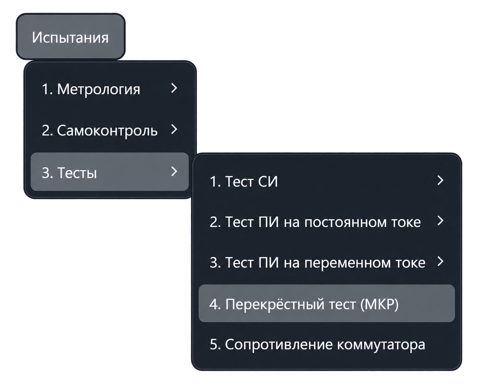
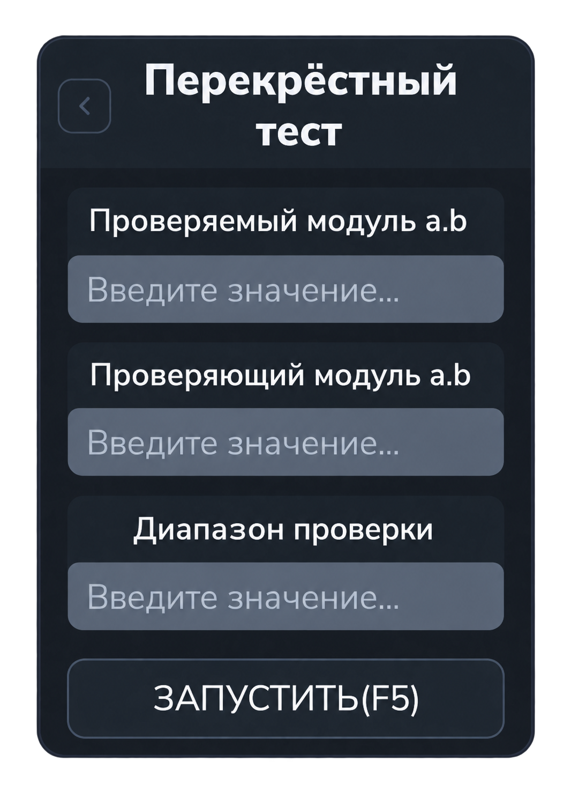

Перекрёстный тест МКР
Тест проверяет работу коммутации одного модуля коммутации реле (МКР) с помощью другого МКР. Проверяются замыкание цепи после подключения точки и отсутствие замыкания после её отключения, а также подключение и отключение шин.
Откройте «Испытания → Тесты → Перекрёстный тест (МКР)». Команда открывает вкладку «Перекрёстный тест»; проверка запускается отдельно.


Параметры
| Поле | Что указать |
|---|---|
| Проверяемый модуль a.b | Адрес МКР, работоспособность которого нужно проверить. |
| Проверяющий модуль a.b | Адрес другого МКР, который используется для проверки. |
| Диапазон проверки | Номера точек: отдельные значения, интервалы или их сочетание через запятую. |
В адресе a.b указываются номер шасси и номер модуля.
Например, 1.6 — модуль 6 шасси 1.
Проверяемый и проверяющий модули должны иметь разные адреса и присутствовать в конфигурации.
Формат диапазона
5— одна точка.1-100— точки с 1 по 100 включительно.1,3-10,20— отдельные точки и интервал.
Для интервала указывайте меньший номер первым; одиночную точку задавайте без дефиса. В текущем интерфейсе верхняя граница ввода — 350. Используйте номера точек, доступные на обоих участвующих модулях.
Порядок работы
- Откройте тест и введите адрес проверяемого МКР.
- Введите адрес проверяющего МКР.
- Укажите диапазон проверяемых точек.
- Нажмите «Запустить» или F5 в активной вкладке.
- Следите за этапами и результатами в протоколе. При ошибках ориентируйтесь на сообщение и запрос приложения.
Перед выполнением приложение проверяет заполнение полей, ищет модули в конфигурации и инициализирует их. На проверяющем модуле включается измеритель.
Этапы теста
- Проверка точек на шине A1. Для каждой точки проверяется наличие замыкания при подключении и его отсутствие после отключения.
- Проверка точек на шине B1. Аналогичная последовательность выполняется для второй шины.
- Проверка шин. Последовательно проверяются пары A1/B1, A2/B2, A3/B3 и A4/B4: наличие замыкания при подключении и его отсутствие при отключении каждой из шин.
Диапазон задаёт точки первых двух этапов. Проверка шин выполняется отдельным этапом.
Результаты
Протокол показывает текущий этап, номер точки или проверяемую пару шин и результат операции. Ошибкой считается отсутствие ожидаемого замыкания либо сохранение замыкания после отключения.
Если модуль не найден, проверьте адрес и конфигурацию. При неверном формате диапазона исправьте поле, указанное приложением, и повторите запуск.
Это проверка состояния цепей коммутации. Испытательное напряжение, ток утечки и порог сопротивления в этой панели не задаются.